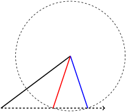
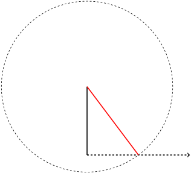

Section 10.1 Congruent triangles
Most of this chapter will be focused on the question “when are two triangles the same?” One reason for this is that triangles are a top three most important shape (only the circle and the rectangle compete). Another is that triangles are in the sweet spot where there’s enough variety that you can make useful inferences but not so much complexity that everything is hopeless. Compare to other shapes. Some are too simple; for example, all circles look the same just zoomed in or out. Others are too wild; it’s hopeless to try to classify all possible species of heptakaidecagons (
\(17\)-gons). Triangles are just right.
Before we talk about how to tell when two triangles are the same, we need to make clear what we mean by two things being the same. There’s more than one way to answer this question. Two answers are mathematically useful. We will look at them in this section and the next.
One answer to this question is, if you move a shape around it’s the same shape. If you rotate it then it’s the same shape. If you reflect it then it’s still the same shape. As long as what you are doing isn’t stretching it or warping it or changing distances then it’s the same shape. This idea can be phrased in mathematician language.
Definition 10.1.1. Congruency.
Two triangles are
congruent if one shape can be sent to the other by a Euclidean transformation. That is, two triangles are congruent if doing some series of translations, reflections, and rotations makes the two shapes exactly overlap.
Note that stretching and resizing is not allowed. As a consequence, two congruent shapes will always have the same area. This immediately gives us an easy criterion to check for when two shapes are different (meaning non-congruent).
Theorem 10.1.2.
If two shapes have different area then they are non-congruent.
Caution! Two shapes can have the same area but not be congruent.
Checkpoint 10.1.3.
Come up with two non-congruent triangles which both have an area of
\(1\text{.}\)
Hint.
If you’re not sure how to tell that two triangles are congruent, peak ahead to the next theorem.
The following is a useful way to think about what congruence means for triangles.
Theorem 10.1.4.
Suppose two triangles are congruent. Then they have the same angles and side lengths. That is, there is a way to label their angles A,B,C and \(A',B',C'\) and opposite sides \(a,b,c\) and \(a',b',c'\) so that:
-
The corresponding angles are the same:
\(A = A'\text{,}\) \(B = B'\text{,}\) and
\(C = C'\text{.}\)
-
The corresponding sides have the same length:
\(a = a'\text{,}\) \(b = b'\text{,}\) and
\(c = c'\text{.}\)
The converse is also true. If two triangles have the same angles and sides then the two triangles are congruent.
Two congruent isosceles right triangles. The three corresponding sides are labeled
\(a,b,c\) and
\(a',b',c'\text{.}\) Note that in this case there is more than one way the label could be done; these are isoceles triangles, so we could swap labels on two equal sides and still have everything line up between the two triangles.
Proof.
For the first statement, translations, rotations, and reflections don’t change angles nor distances. For the converse, if two triangles have the same angles and sides then you can make them exactly overlap. Namely, translate, reflect, and/or rotate as necessary to make the angles
\(A\) and
\(A'\) exactly overlap, with
\(B\) and
\(B'\) both on, say, the left side of the angle. Because the side lengths are the same the angles
\(B\) and
\(B'\) and
\(C\) and
\(C'\) will exactly overlap. So the three vertices are in the locations, so the triangles exactly overlap.
One thing this theorem says if that you know all six data about a triangle—the three side lengths and the three angles—then that data uniquely specifies the triangle. Any triangle with the same data must be the same (congruent).
Surely you don’t need all six data. If you know two angles, then the third is determined. This is because the three angles must add up to
\(180^\circ\text{.}\) For example, if you know a triangle has angles of measure
\(90^\circ\) and
\(30^\circ\) then you can calculate the remaining angle is
\(180^\circ - 90^\circ - 30^\circ = 60^\circ\text{.}\) So five data is enough to uniquely specify a triangle.
Can you go lower? How few of these six data are needed to identify a triangle?
It turns that, with a couple exceptions, any specification of three data is enough to identify a triangle up to congruence.
It’s helpful to have a notation for talking about data to specify a triangle.
Definition 10.1.5.
We can specify a triangle by (most) three letter sequences of ‘A’s and ‘S’s. ‘A’ stands for angle and ‘S’ stands for side. This specification starts at an angle or a side, depending on the first letter, and proceeds either counterclockwise or clockwise. As you go around the second then the third letter specify either the next angle or side length.
For example, AAS specifies that you know an angle, then the next angle, then side, all going in the same direction from the start. Or SSS specifies that you know one side, then the next, then the next (that is, you know all three sides).
Because order doesn’t matter—you can go either counterclockwise or clockwise—if you reverse the order of the letters you get the same specification. This only applies to two cases: AAS is the same specification as SAA and ASS is the same specification as SSA. All other specifications are palindromes, so reversing the order gives the same thing. Knowing this redundancy, there are six different specifications.
Theorem 10.1.6. Specifying triangles up to congruence.
The following data each specify a triangle up to congruence.
The following data do not specify a triangle up to congruence.
Proof.
Most of these can be explained by drawing pictures. I will give you two positive cases and the negative cases, with the remanining two positive cases left as homework.
Let’s start with the easiest. AAA doesn’t specify a triangle up to congruence because you can scale a triangle to be larger or smaller and not change the angles.
Now let’s do a positive instance, namely SAS. The data that SAS gives is two fixed lengths of line with a fixed angle between them. If you draw this, it is immediate that there’s only one possible triangle they could form, namely the one you get by connecting the opposite ends of the line segments.
SAS data specifying a triangle up to congruence. An explained in the preceeding paragraph, two fixed lines with a fixed angle are drawn. There’s only one possible third side, which is represented as a dashed line between the opposite endpoints of the two fixed lines.
Next let’s do SSS. You can think of what this tells you this way. You know the length of one side, which you may as well fix as the reference point for the other two sides. You don’t know the angles for the other two sides, but you know their lengths. So you can draw circles at the vertices of your fixed side representing where those other sides can point. It’s a standard fact about plane geometry that two circles intersect in at most two points. Those two points are the possible third vertex for the triangle. That may look like there’s two possible triangles. But whichever you pick, they are reflections of each other. So they are the same (meaning congruent).
SSS data specifying a triangle up to congruence. One side is fixed in space. The possible endpoints for the other two are represented by circles centered at each endpoint of the fixed side. Radii are drawn to meet at one of the two points the circle intersect, above the fixed line. The second point of intersection is the mirror of this one below the circle, so if we had instead connected to there we’d get a congruent triangle.
The remaining two positive cases—ASA and AAS—are left as homework for you. They can be handled by similar geometric reasoning. Think about what the data tells you and draw a corresponding picture.
To close this out, let’s do the negative case of ASS. I saved it for last because it’s the trickiest. We know an angle and in succession two side lengths coming out from it. But we are missing one side length attached to that angle. Fix the angle as our reference point for everything else. We can represent the possible missing side lengths as a ray coming out from the angle. The side we know adjacent to the angle has no choice on where to go; it’s a known angle from our reference point and a known distance. The second side, however, we don’t know where to place. We know its length but not which direction it’s going. It must, however, connect to the ray representing the possible lengths for the third side. But we run into a problem here, as there can be more than one place it hits that ray.

ASS data that admits two possible triangles. As described in the preceeding paragraph, the direction of the unknown side is shown as a dashed ray going out from the fixed angle. The side adjacent to the fixed angle has its location entirely fixed. The next side is swinging from it, as represented by a circle showing its possbile locations. Two of those locations intersect the dashed ray, with the corresponding possible sides shown in red and blue.
The two possible triangles are clearly not congruent; the angles are different. As such, this data did not uniquely determine a triangle.
Except, sometimes it does. If the known angle is right or obtuse, then there is only one possible place to attach to the third side. So sometimes ASS does uniquely specify a triangle.

ASS data for a right triangle. Very similar to the previous picture. But unlike it there’s only one place the circle for possible second side locations intersects the ray for possible third side locations. The corresponding location of the second side is drawn there in red.
Note that the special case in this picture is what you are facing if you know one leg and the hypotenuse of a right triangle. In this case you can use the Pythagorean theorem to find the length of the remaining leg, and this picture confirms that there is a unique thing you are solving for.
That one of the negative cases is ASS lends itself to mnemonics. This is especially when teaching children, who almost always will giggle at their teaching saying that word. Here’s one of many possible mnemonics to remember which cases are negative: “AAA video games are ASS.”
It should be noted that in the SSS case, some triples of side lengths don’t specify any triangle. Namely, the side lengths of a triangle must obey what’s known as the
triangle inequality: any side length must be less than the sum of the other two. (Think of it this way. You can take a direct route—one side of the triangle—or a detour—go along the other two lines. The triangle inequality says you can’t get a shorter route by taking a detour.) So if one side is too much larger than the other two then you aren’t specifying any triangle at all. For example, the side lengths
\(2, 3, 12\) don’t specify a triangle at all, because
\(12\) is too large to fit the other two sides on.
Unlike the ASS case, however, the SSS case will never admit more than one possible triangle. It’s either a unique triangle, or else it doesn’t specify any triangle at all.
A failure of an SSS triple of data to specify a triangle. The long horizontal side labeled with a length of
\(12\) is simply too big for the arms of length
\(2\) and
\(3\) to touch. You can see by the dashed circles representing their possible endpoints that no angle will do to get them close enough. They are doomed to be forever apart, like star-crossed lovers.
You should be familiar with using partial information about a triangle to know you can get the rest of the data from the Pythagorean theorem. If you know you’re dealing with a right triangle—that is, you know one angle—and you know two sides, you can calculate the remaining side. Indeed, using the
law of sines and
law of cosines from trigonemetry, you can do a similar process with non-right triangles. This process requires, of course, that you know trigonometry, which is a more difficult area of mathematics than what we are looking at. So we won’t talk about how you actually calculate the missing info. Suffice it to say, the four triples of data SSS, SAS, ASA, and SAA are enough to both uniquely specify a triangle and allow you to calculate the missing information. It’s not just a theoretical fact, it’s also a practical one.
In general in mathematics, the questions of “does an answer exist?” and “if so, can you calculate it?” are not the same. Often answering the second question is much harder than answering the first and requires more advanced techniques. This is one reason mathematics can be frustrating; it is easy to run into questions without having the tools to answer them.